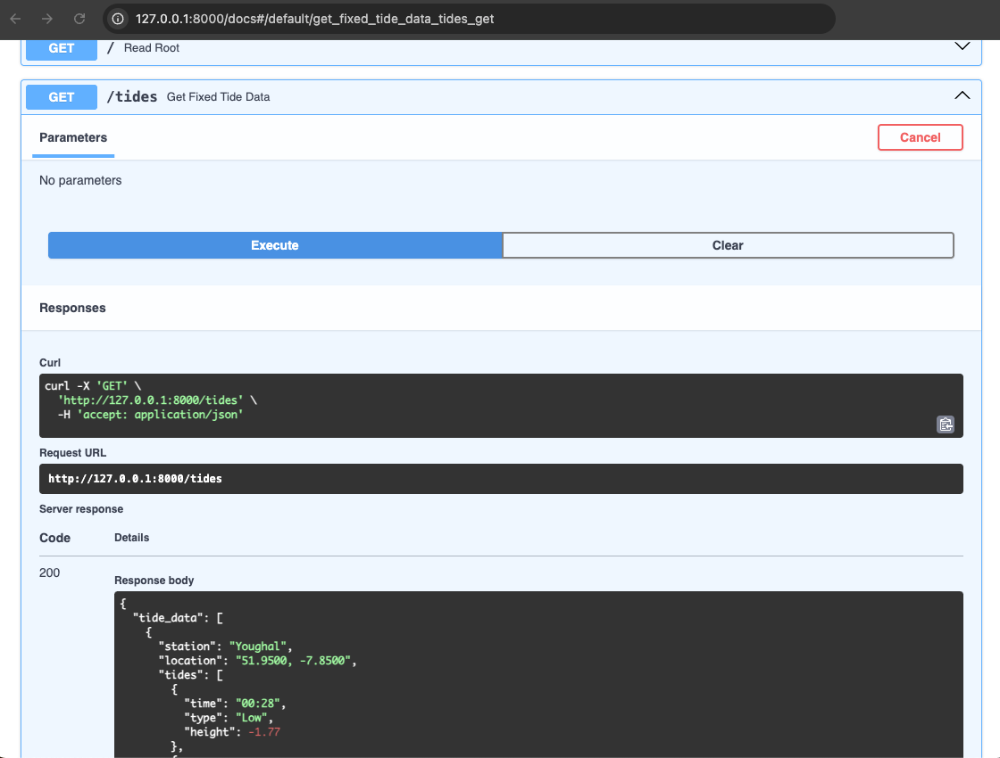
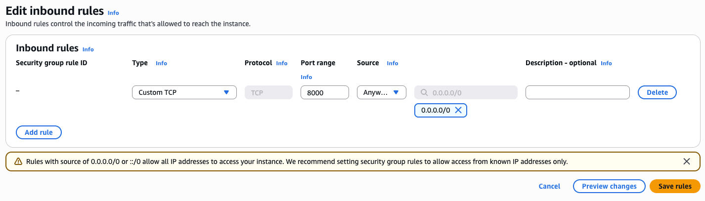

Deploy a FastAPI microservice to AWS EC2 using Uvicorn¶
This guide shows you how to deploy a FastAPI microservice to AWS EC2. The service fetches data from a third-party API, processes the response, and exposes it through a RESTful endpoint. While the API used in this example uses a free tidal data API, the same pattern can be applied to any data-driven API.
Deploy the FastAPI microservice locally¶
Before deploying to EC2, test your app locally to make sure everything runs as expected.
Prerequisites¶
Before you begin, make sure you have the following installed:
- Python 3.10 or later
pip- A free API key from WorldTides
Step 1: Clone the GitHub project¶
Clone the GitHub project containing the Python, environment, and requirements files:
git clone git@github.com:carolinemaymaguirecmm/about.git
cd about/docs/projects/fast-dsp-microservice
Step 2: Set up and activate a virtual environment¶
python3 -m venv venv
source venv/bin/activate
Step 3: Install dependencies¶
pip install -r requirements.txt
Step 4: Add your API Key¶
Open the .env file and replace the placeholder with your WorldTides API key:
TIDE_API_KEY=your_api_key_here
Step 5: Start the API server¶
Run the FastAPI app using Uvicorn:
uvicorn main:app --reload
You should see output similar to the following:
INFO: Uvicorn running on http://127.0.0.1:8000
Step 6: View the endpoint in your browser¶
When you visit http://localhost:8000/tides, you'll receive the following JSON response:
{
"tide_data": [
{
"station": "Youghal",
"location": "51.9500, -7.8500",
"tides": [
{
"time": "01:13",
"type": "Low",
"height": -1.72
},
{
"time": "06:58",
"type": "High",
"height": 1.67
}
]
}
]
}
Note
This endpoint returns tide data for three nearby stations. The number of stations is limited to avoid exceeding free-tier API limits. You can change the base location, the radius, or the station limit by modifyingmain.py.
Explore FastAPI documentation features¶
FastAPI includes automatically generated interactive API documentation. You can explore and test your API using the following interfaces:
- Swagger UI: http://localhost:8000/docs
- ReDoc: http://localhost:8000/redoc

Deploy a FastAPI microservice to AWS EC2¶
Follow these steps to deploy the microservice to the cloud using Amazon EC2.
Step 1: Launch an EC2 instance¶
- Go to the AWS Management Console.
-
Launch a new EC2 instance with the following configuration:
- AMI: Ubuntu Server 22.04 LTS
- Instance type:
t2.micro - Key pair: Create a new key pair and download the
.pemfile.
-
Click Launch instance.
- After launch, navigate to EC2 > Instances, select your instance, and copy the Public IPv4 address.
Step 2: Configure the security group¶
AWS EC2 blocks all incoming traffic to your EC2 instance. To access your FastAPI app from a browser, you must allow traffic on the port Uvicorn uses. By default, this value is 8000.
- In the EC2 Console, open your instance and scroll to the Security section.
- Click the security group name.
- Select the Inbound rules tab and click Edit inbound rules.
- Click Add rule, then enter the following values:
- Type: Custom TCP
- Port range:
8000 - Source:
<your-ip-address>or0.0.0.0/0
- Click Save rules.

Important
For security, restrict access by using your IP as the source instead of0.0.0.0/0. Only use0.0.0.0/0to allow public access during short testing periods.
Step 3: SSH into the instance¶
Use SSH to connect to your EC2 instance. Replace <your-key-name> with your .pem file name and <your-ec2-public-ip> with the instance’s public IPv4 address:
ssh -i <your-key-name>.pem ubuntu@<your-ec2-public-ip>
Step 4: Set up the environment on EC2¶
Update the package index and install Python and Git:
sudo apt update && sudo apt install -y python3 python3-pip python3-venv git
Step 5: Clone the GitHub project¶
Clone the GitHub repository containing the project files:
git clone https://github.com/carolinemaymaguirecmm/about.git
cd about/docs/projects/fast-dsp-microservice
Step 6: Set up and run¶
Create and activate a virtual environment, then install the required Python packages:
python3 -m venv venv
source venv/bin/activate
pip install -r requirements.txt
Step 7: Add your API key¶
Open the .env file and add your WorldTides API key:
nano .env
Then add the following line:
TIDE_API_KEY=your_api_key_here
Step 8: Start FastAPI with public access¶
Start the FastAPI server with the following command:
uvicorn main:app --host 0.0.0.0 --port 8000
Once the server is running, visit: http://<your-ec2-public-ip>/tides
You should see a JSON response with tide data from the nearest stations.
Your FastAPI microservice is now live and accessible on AWS EC2. For additional tips on how to enhance your deployment, refer to the official FastAPI deployment guide.